Сурцов Владимир Владимирович
HTTP – это протокол прикладного уровня, работающий поверх TCP. Сам протокол stateless. Каждый запрос независим, предыдущий забывается сразу после отправки ответа.
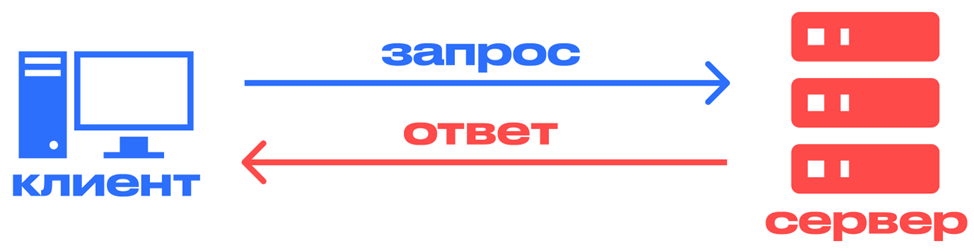
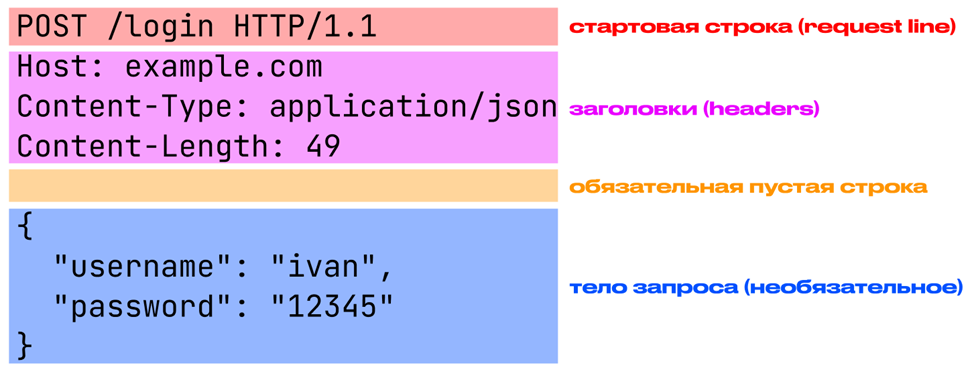
HTTP-метод
Адрес запрашиваемого ресурса (request-target)
Версия протокола HTTP
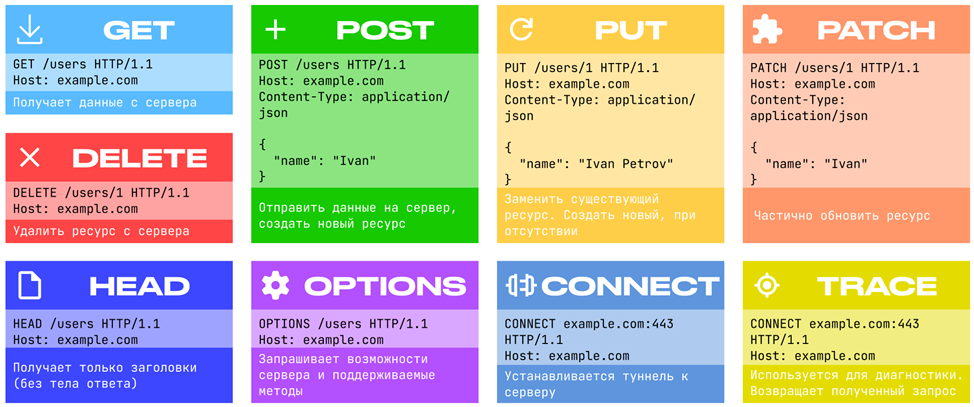
URL (Uniform Resource Locator — «унифицированный указатель ресурса») — это структурированная строка символов, которая идентифицирует ресурс в сети и служит его уникальным адресом.
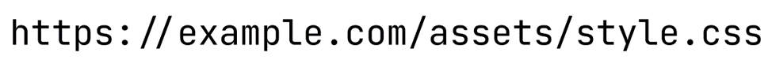
HTTP/0.9 (1991) — Самый первый вариант, созданный Тимом Бернерсом-Ли. Запрос выглядел просто как GET /index.html. Сервер возвращал только тело HTML-файла. Никаких заголовков, ошибок или картинок передавать было нельзя.
HTTP/1.0 (1996) — Появление метаданных В RFC 1945 была добавлена структура: стартовая строка, заголовки и тело. Появился метод POST для отправки форм. Однако протокол был неэффективен: для загрузки страницы с 50 картинками браузеру приходилось создавать 50 новых TCP-соединений, каждое из которых долго «разгонялось» (медленный старт TCP).
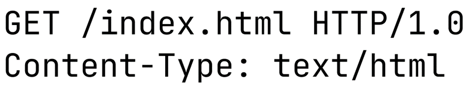
HTTP/1.1 (1997) — Главное нововведение — Keep-Alive. Соединение перестало закрываться после ответа, позволяя скачивать CSS, JS и картинки друг за другом по одному каналу. Появился обязательный заголовок Host, что позволило размещать тысячи разных сайтов на одном IP-адресе (виртуальный хостинг). Также добавили новые методы: PUT, DELETE, OPTIONS, TRACE, CONNECT, PATCH.
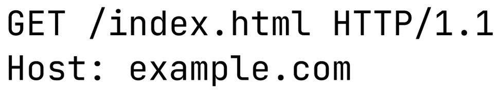
HTTP/2 (2015) — Разработан на базе протокола Google SPDY. Вместо читаемого текста используются компактные бинарные фреймы. Мультиплексирование десятков запросов и ответов передаются параллельно в рамках одного TCP-соединения.
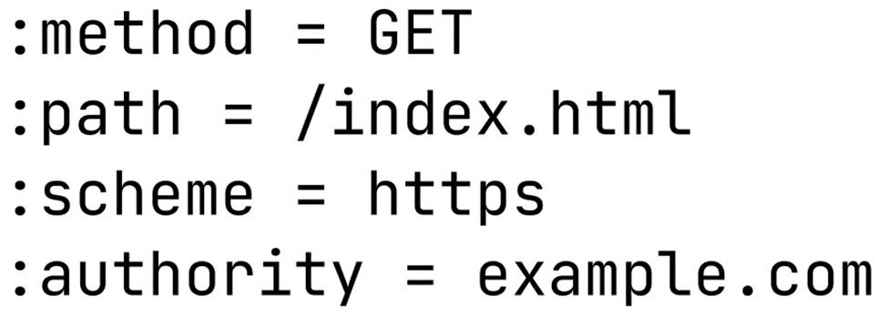
HTTP/3 (2022) — Не просто обновляет протокол, он меняет транспортный уровень. Вместо TCP используется QUIC, работающий поверх UDP.
HTTP-заголовки (headers) — это служебные строки в формате «Ключ: Значение», которые передают метаданные о запросе или ответе. Они позволяют клиенту и серверу договориться о формате данных, способе передачи, безопасности и кэшировании.
Заголовки запроса. Это те, что клиент шлёт серверу, чтобы рассказать о себе или уточнить, что именно ему нужно. Например, User-Agent (кто я такой), Accept (какие форматы данных я понимаю), Authorization (вот мой токен, пустите). Без них серверу пришлось бы гадать.
Заголовки ответа. Тут сервер отвечает взаимностью: рассказывает про себя или добавляет служебную информацию. Классика – Server (апач, нджинкс или что-то самописное), Location (редирект, ищи там), Retry-After (приходи позже). Иногда без них никак, например, при авторизации нужно отдать WWW-Authenticate.
Заголовки представления (Representation headers). Они описывают, что именно лежит в теле сообщения. Самый известный – Content-Type (это JSON, картинка или HTML), плюс Content-Language, Content-Encoding (сжато gzip или нет). Если перепутать, клиент попытается распарсить HTML как JSON и упадёт с ошибкой.
Заголовки управления передачей (Message Framing). Они нужны, чтобы понять, где заканчивается тело запроса/ответа и начинается следующее сообщение. Главные тут Content-Length (сколько байт читать) и Transfer-Encoding: chunked (данные идут кусками, смотри на размер каждого чанка). Если сервер ошибётся с длиной, клиент либо откусит лишнего, либо зависнет в ожидании.
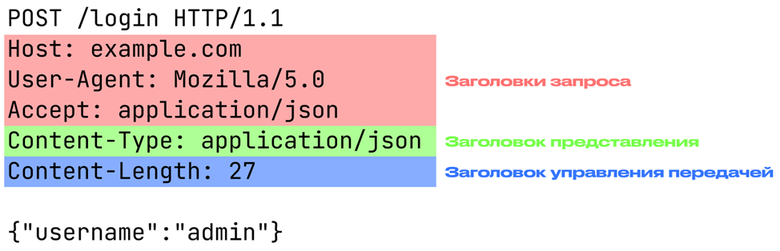
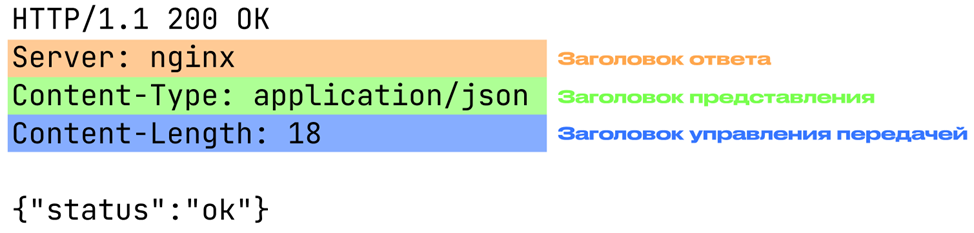
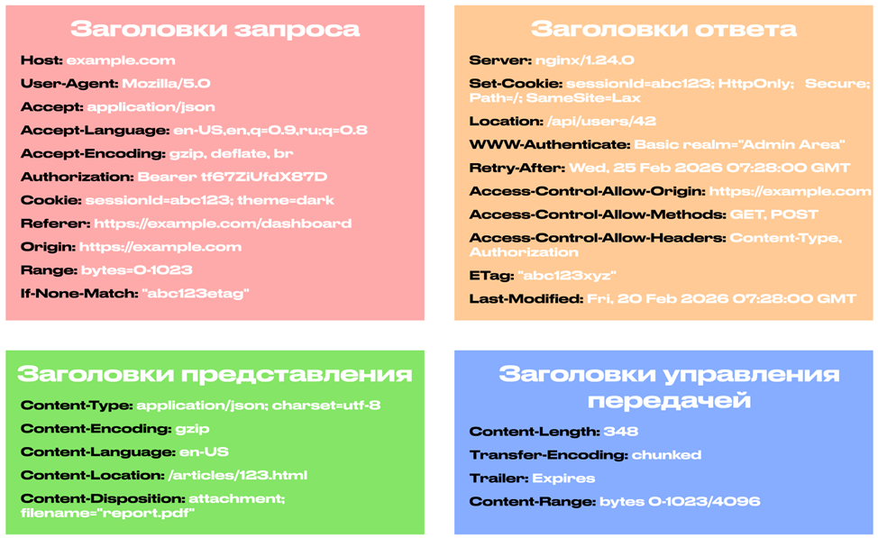
Тело запроса – это данные, которые клиент отправляет на сервер. В HTTP оно идёт после заголовков, и между ними обязательно должна быть пустая строка. Без этой пустой строки сервер не поймёт, где заканчивается служебная информация и начинаются сами данные.
Не все запросы имеют тело. GET и HEAD, например, обычно не имеют тела – большинство серверов его игнорируют. А вот POST, PUT и PATCH без тела почти не бывает, потому что через них как раз и отправляют то, что меняет состояние на сервере: формы, JSON, файлы. DELETE в теории тоже может что-то передавать в теле, но на практике так почти никто не делает, и многие серверы просто игнорируют тело в DELETE.
Что именно лежит в теле, определяют заголовки. Content-Type говорит, что за тип данных: JSON, XML, картинка или просто текст. Content-Length – сколько байт сервер должен прочитать. Если забыть указать Content-Type, серверу придётся гадать, и обычно это кончается ошибкой 415 Unsupported Media Type.
В качестве тела может передаваться что угодно: JSON (сейчас это стандарт для API), XML (на старых проектах), form-data (когда в форме есть файлы), бинарные данные или поток. Главное, чтобы и клиент, и сервер понимали, с чем имеют дело.
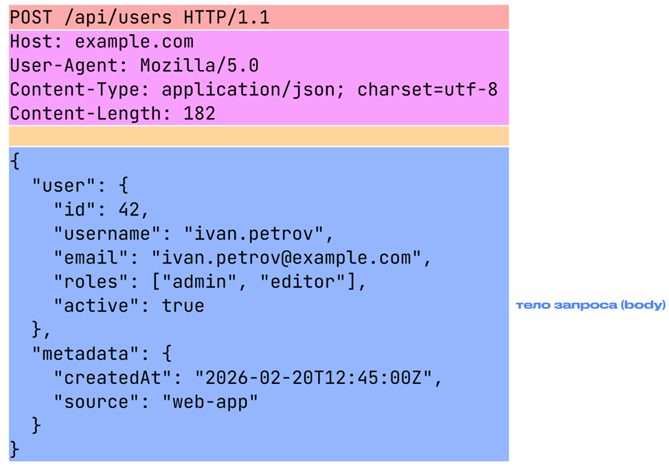
Когда сервер разобрался с запросом, он собирает ответ. Структура примерно та же, что и у запроса: сначала статусная строка (для HTTP/1.1), потом заголовки, потом пустая строка и, если нужно, тело.
В статусной строке три части: версия протокола, трёхзначный код и текстовое пояснение к нему. Код – это самое главное. Пояснение вроде OK, Not Found или Internal Server Error уже опционально, браузеры на него не особо смотрят.
Код состояния ответа HTTP показывает, был ли успешно выполнен определённый HTTP запрос.Ответы сгруппированы в 5 классов:
HTTPS не является самостоятельным протоколом. Это результат работы протокола прикладного уровня HTTP поверх протокола защиты транспортного уровня TLS (Transport Layer Security).
HTTPS шифрует весь трафик целиком, а не только пароли.